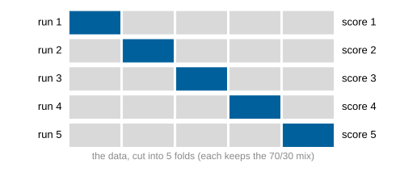
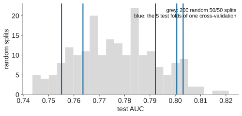
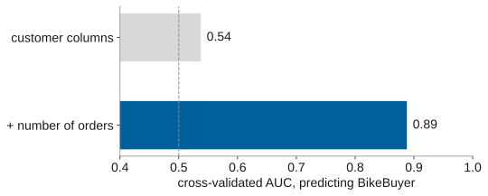

name: title layout: true class: cover --- count: false .section-mark.center[ ## Model selection and cross-validation ### How far to trust a score, and how to choose <br /> Oscar Esteban <<code>oscar.esteban@hevs.ch</code>> <br /> EAD · Exploration avancée de données et intelligence décisionnelle · 16.10.2026 ] ??? This deck asks how far a score can be trusted, how to choose among models without fooling oneself, and what happens when data preparation hands the answer to the model. The previous deck, *Evaluating a classifier*, showed a "± 0.049" beside the AUC on Dataiku's Results screen; slide 2 shows it again. This deck explains it: the ± measures how much a score moves between test sets, and cross-validation, defined on slide 4, is the tool that estimates it. A further danger is data leakage: variables in historical data that carry information about the target but would not be known at decision time, a concern Provost and Fawcett place in data preparation (Provost & Fawcett, 2013, p. 30). The textbook's chapter 5, *Overfitting and Its Avoidance*, starts on p. 111 and covers holdout data, cross-validation and methods for choosing among models (Provost & Fawcett, 2013, p. 111). --- name: newsection layout: true .perma-sidebar[ <p class="rotate"> <a rel="license" href="http://creativecommons.org/licenses/by/4.0/"><img alt="Creative Commons License" style="border-width:0; height: 20px; padding-top: 6px;" src="https://i.creativecommons.org/l/by/4.0/88x31.png" /></a> <span style="padding-left: 10px; font-weight: 600;">Model selection and cross-validation (16.10.2026)</span> </p> ] --- .section-mark[ # How far can a score be trusted? .large[A score is measured on a sample of credits. Another sample gives another score.] .book[<i class="fa-solid fa-book-open"></i> Provost & Fawcett (2013), chapter 5, pp. 111 to 113] ] ??? A model is built on one set of credits and scored on another. That score estimates how well the model generalizes, the property by which it applies to data not used to build it (Provost & Fawcett, 2013, p. 112). "Every dataset is a finite sample of a population" (Provost & Fawcett, 2013, p. 112, verbatim): the 1,000 credits are not all credits a bank will ever see, and a model that memorizes its training data instead of generalizing is useless on new cases (Provost & Fawcett, 2013, pp. 111 to 112). The holdout set, data kept apart from training, provides a laboratory test of generalization (Provost & Fawcett, 2013, p. 113). But a single holdout gives only one number. The ± 0.049 of Dataiku's Results screen (slide 2) signals that this number would change with a different split, and the rest of this deck measures how much. --- class: stepwise-svg # Dataiku reports each score with a ± <img class="phase-thumb" src="images/phase-mo.svg" alt="The CRISP-DM phases, modeling lit" /> .beside-thumb[ <object type="image/svg+xml" data="images/results-capture.svg" style="width: 74%; display: block; margin: 0.2em auto 0; pointer-events: none;"></object> <div class="marks3"> <div class="step-1"><b>1 ROC AUC</b>: how often a bad credit outranks a good one (previous deck, slides 12 and 13).</div> <div class="step-2"><b>2 0.702</b>: the score that put this model first.</div> <div class="step-3"><b>3 ± 0.049</b>: how much that score moves from one test set to another (slide 5).</div> </div> .step-3.large.center[How far can 0.702 be trusted?] ] .footnote[Screen capture: Dataiku DSS 15.0, course server, 14 October 2026, cropped. In this run Dataiku had left out five attributes it read as text; the deck's own numbers use all 20 (scikit-learn).] ??? The screen capture shows Dataiku's Results screen after training several models on the credit data. Three elements are marked. ROC AUC, the metric selected here, measures how often the model's scores rank a bad credit above a good one; the previous deck defines it on slides 12 and 13. Provost and Fawcett present it as a good overall summary of how well a classifier ranks (Provost & Fawcett, 2013, p. 219). Because the AUC does not depend on class proportions or costs (Provost & Fawcett, 2013, p. 218), it serves to rank models before either is fixed. The score of 0.702 placed the logistic regression first. The margin of ± 0.049 is twice the standard deviation of the scores from cross-validation, the method slide 4 defines (Dataiku, 2024, *Prediction settings*); slide 5 reads it in detail. The closing question, how far 0.702 can be trusted, frames what follows: slide 3 shows how much the score moves when the split changes. The capture comes from a run on the course server in which Dataiku had left out five attributes, `status` and `credit_history` among them, because it took their long labels for free text; panel 2 of the group sheet now puts them back before training. With all 20 attributes, the deck's own random forest reaches a mean of 0.78 over five folds in scikit-learn (slide 5), so the 0.702 shown here understates what the data allow. --- # One split is one draw <img class="phase-thumb" src="images/phase-mo.svg" alt="The CRISP-DM phases, modeling lit" /> .beside-thumb[ <img src="images/split-variability.svg" style="width: 80%; display: block; margin: 0.4em auto 0;" alt="Test AUC over 200 random splits of the same data, from 0.74 to 0.82" /> .large.center[Same data, same model, 200 random splits into two halves: the test AUC ranges from 0.74 to 0.82, by the split alone.] In Dataiku, **Design → Train/Test set** makes one such split, with a random seed. ] .footnote[A random forest on South German Credit (scikit-learn). .book[<i class="fa-solid fa-book-open"></i> Provost & Fawcett (2013), pp. 126 and 129.]] ??? The figure shows 200 random splits of the South German Credit data into two equal halves, each time training the same random forest and measuring the test AUC. The result ranges from 0.744 to 0.821, a spread of about 0.08, driven only by which credits fell in which half. A single holdout estimate picks one point from that range with no indication of how far it sits from the true performance. The textbook asks: "Should we have any confidence in a single estimate of model accuracy?" (Provost & Fawcett, 2013, p. 126, verbatim). The method defined on the next slide replaces one estimate with several and reports both their mean and their spread (Provost & Fawcett, 2013, p. 126). In Dataiku, Design then Train/Test set makes one such split, governed by a random seed; changing the seed moves the score within the range the figure shows. --- # Cross-validation tests every row exactly once <img class="phase-thumb" src="images/phase-mo.svg" alt="The CRISP-DM phases, modeling lit" /> .beside-thumb[ <p></p> **Cross-validation** cuts the rows into parts, the *folds*. Each fold is held out once while the model learns from the others, so every credit is tested exactly once. Five folds give five scores: report their mean **and** their spread. *Stratified*: every fold keeps the 70/30 mix of the data. In Dataiku the setting is called *K-fold cross-test*. ] .footnote[.book[<i class="fa-solid fa-book-open"></i> Provost & Fawcett (2013), pp. 127 to 129.] Stratified folds: Dataiku DSS 13, *Prediction settings*.] ??? Cross-validation splits the data into equal parts called folds. Each fold is held out once for testing while the model trains on the others, so every credit is tested exactly once. With five folds, five models are built and five scores collected; their mean and their spread together describe how the model performs and how much that performance varies across subsets of the data (Provost & Fawcett, 2013, pp. 127 to 129). Unlike a single holdout, "cross-validation also makes better use of a limited dataset" (Provost & Fawcett, 2013, p. 126, verbatim). Stratified folds keep the class proportions of the whole dataset, here the 70/30 mix of good and bad credits, in every fold (Dataiku, 2024, *Prediction settings*). In Dataiku the setting is labelled *K-fold cross-test*, under Design then Train/Test set; it can also be stratified or grouped. --- class: stepwise-svg # Read the ± as spread, and compare fold by fold <img class="phase-thumb" src="images/phase-mo.svg" alt="The CRISP-DM phases, modeling lit" /> .beside-thumb[ <div class="spread2 step-1"> <div><p></p></div> <div class="step-2"><img src="images/dataiku/roc-folds.png" style="width: 100%;" alt="Dataiku's ROC curves, one per fold, for an XGBoost model" /> <p class="cap">In Dataiku: one ROC curve per fold. AUC 0.756 (± 0.029).</p></div> </div> <div class="points3 step-1"> <div>The five folds score 0.755 to 0.803: mean 0.78, ± 0.04.</div> <div>Dataiku's <b>±</b> is twice the standard deviation of the fold scores: how much the score moves between folds, not a confidence interval.</div> <div>To compare two models, score them on the same folds and count the folds where one wins. Overlapping ± say little.</div> </div> ] .footnote[.book[<i class="fa-solid fa-book-open"></i> Provost & Fawcett (2013), p. 129.] The ±: Dataiku DSS 13, *Prediction settings*, K-fold cross-test. Right: screen capture, Dataiku DSS 15.0, course server, 15 October 2026, an XGBoost model, **Performance → ROC & PR curves**, cropped.] ??? The five fold AUCs are 0.803, 0.792, 0.801, 0.764 and 0.755, with a mean of 0.78. Dataiku's ± is twice the standard deviation of the fold scores (Dataiku, 2024, *Prediction settings*), about 0.04 here. It describes how much the score moves from fold to fold. The folds share most of their training data, so their errors are correlated and the standard deviation understates the true uncertainty of the mean (Bengio & Grandvalet, 2004). Provost and Fawcett report cross-validated results as a mean and standard deviation, treating the spread as a description of variability, not as a confidence interval (Provost & Fawcett, 2013, pp. 128 to 129). To compare two models, both are run on the same folds: on churn data, classification trees averaged 68.6% with a standard deviation of 1.1, logistic regression 64.1% with 1.3, and "there are definite differences between the two" (Provost & Fawcett, 2013, p. 129, verbatim). Comparing fold by fold reveals whether one model is consistently stronger. Step 2 adds Dataiku's view of the same idea: **Performance → ROC & PR curves** for an XGBoost model trained with five folds on the course server (Dataiku DSS 15.0, 15 October 2026). Each coloured line is the ROC curve of one fold, scored on the fifth of the credits that fold held out. The curves agree at the corners and part in the middle, where a few credits more or less on one side of a cut-off move a fold's curve; Dataiku sums them up as an AUC of 0.756 (± 0.029). The width of that bundle is what the ± measures. --- class: stepwise-svg # Choose on the folds, then test once on new rows <img class="phase-thumb" src="images/phase-mo.svg" alt="The CRISP-DM phases, modeling lit" /> .beside-thumb[ <div class="step-1"><object type="image/svg+xml" data="images/test-kept-apart.svg" style="width: 100%; pointer-events: none;"></object></div> .terms[ .step-2[**Hyperparameter**: a setting fixed before training, such as the number of trees. In Dataiku, **Design → Hyperparameters**.] .step-3[Every choice made on the folds (algorithm, hyperparameters, threshold) flatters their score; the test kept apart gives the honest one. With few rows, **nested** cross-validation repeats the whole choice inside each fold instead.] ] ] .footnote[.book[<i class="fa-solid fa-book-open"></i> Provost & Fawcett (2013), pp. 134 to 135.] Choosing among models is part of CRISP-DM's modeling: tasks 4.1 and 4.4 (P. Chapman et al., 2000).] ??? A hyperparameter is a setting fixed before training, such as the number of trees in a random forest; in Dataiku, Design then Hyperparameters. Every choice made on the folds (algorithm, hyperparameters, threshold) flatters the fold scores: the best of several noisy scores looks better than the model will do on new rows (Provost & Fawcett, 2013, pp. 134 to 135). To get an honest figure, "test data should be strictly independent of model building" (Provost & Fawcett, 2013, p. 134, verbatim): a test set kept apart and used only once. When data are too few to set a test set aside, nested cross-validation places the whole selection inside each fold, producing thirty models with five folds at both levels (Provost & Fawcett, 2013, p. 135). Selecting the technique is CRISP-DM's task 4.1; assessing the result is task 4.4, which ranks models against the evaluation criteria and revises settings for the next run (Chapman et al., 2000, pp. 27 and 29). The scikit-learn map of deck 1, slide 8, and its "NOT WORKING" arrows assume this division: cross-validation to choose, a final test to measure. --- # Hands-on 1, continued: five folds <img class="phase-thumb" src="images/phase-mo.svg" alt="The CRISP-DM phases, modeling lit" /> .beside-thumb[ .need[**The need.** The committee asks whether the best model is better, or only luckier with its test set.] <div class="moves"> <div><b>1. Switch</b><i>K-fold cross-test</i>, 5 folds, stratified.<br /><code>Design → Train/Test set</code></div> <div><b>2. Train</b>Two algorithms only: logistic regression and random forest.<br /><code>Design → Algorithms</code></div> <div><b>3. Compare</b>Each score and its ±: can you say one is better?<br />Sheet, panel 7</div> </div> .need[Groups of three, same roles. 10 minutes.] ] ??? The committee's question is whether the best model from the previous hands-on is genuinely better, or only luckier with its test set. To answer it, groups switch to *K-fold cross-test* (five folds, stratified) under Design then Train/Test set, and train two algorithms: logistic regression and a random forest. Sheet panel 7 shows each model's score with its ±, twice the standard deviation over the folds. Declaring one model better requires more than comparing the means: if the ± ranges overlap heavily, the folds where one algorithm wins should be counted against those where the other does (Provost & Fawcett, 2013, p. 129). A model that wins most folds is more convincingly better than one whose higher mean rests on a single strong fold. Once the model is cross-validated, **Performance → Confusion matrix** says so in a banner: its record counts, and those of the cost matrix, come from the first fold only, while the metrics shown beside it are averages over all folds (Dataiku DSS 15.0, course server). A count copied from that screen is therefore one fold's, about 200 credits. --- class: stepwise-svg # Dataiku's decision chart: every curve at once <img class="phase-thumb" src="images/phase-mo-ev.svg" alt="The CRISP-DM phases, modeling and evaluation lit" /> .beside-thumb[ <object type="image/svg+xml" data="images/decision-chart.svg" style="width: 100%; margin-top: 0.4em; pointer-events: none;"></object> <div class="marks3"> <div class="step-1"><b>1</b> Precision, recall and F1 at every cut-off, as in the previous deck (slide 10).</div> <div class="step-2"><b>2</b> The <i>cost matrix gain</i>, minus the cost: highest at 0.17, the cut-off Dataiku picks from the costs of panel 5.</div> <div class="step-3"><b>3</b> The shaded bands: how much each curve moves from fold to fold.</div> </div> ] .footnote[Screen capture: Dataiku DSS 15.0, course server, 14 October 2026; a support vector machine, five folds, the costs of panel 5. **Performance → Decision chart**.] ??? The screen capture shows a support vector machine scored with five folds and the cost matrix entered in the previous hands-on (panel 5 of the sheet). The decision chart plots precision, recall and F1 against the cut-off, the same trade-off shown in deck 2, slide 10, but here with shaded bands that show how much each curve moves from fold to fold. The curve marked *cost matrix gain* is the negative of the expected cost: it is highest at 0.17, the cut-off the cost rule gives when one error costs five times the other (deck 2, slides 18 and 19). DSS chooses the threshold by the metric selected in Design then Metrics (Dataiku, 2024, *Prediction settings*). The bands are the visual equivalent of the ±: a wide band at the chosen cut-off means the gain there is uncertain, a narrow one means the folds agree. The next two slides turn to a different danger: variables that leak the answer to the model. --- # One column took Zalaxus from chance to 0.89 <img class="phase-thumb" src="images/phase-dp.svg" alt="The CRISP-DM phases, data preparation lit" /> .beside-thumb[ <p></p> .large.center[`BikeBuyer` is computed from the orders: a customer with a bike among them. Counting the orders hands the answer to the model.] ] .footnote[Zalaxus, the module's group-project dataset; a random forest, scikit-learn. .book[<i class="fa-solid fa-book-open"></i> Provost & Fawcett (2013), p. 30.]] ??? Zalaxus is the module's teaching dataset, a fictitious retailer whose customers are classified as bike buyers or not. The target, `BikeBuyer`, is derived from the orders table: a customer is a buyer exactly when at least one order line is a bike. With the customer columns alone (age, income, education), a random forest reaches a cross-validated AUC of 0.537, barely above chance. Adding the number of orders lifts it to 0.888: the count carries the answer because customers with more orders are more likely to have a bike among them. The number of orders would not be known for the targeting question, which concerns customers who have not yet bought. Provost and Fawcett warn that "leakage must be considered carefully during data preparation" (Provost & Fawcett, 2013, p. 30, verbatim), because data preparation works on historical records where such variables sit alongside the target. Zalaxus is the dataset students use for the group project; the next slide lists the kinds of leaks to check before trusting any score. --- # Leaks to hunt before you trust a score <img class="phase-thumb" src="images/phase-dp.svg" alt="The CRISP-DM phases, data preparation lit" /> .beside-thumb[ - A column recorded **after** the outcome: orders, payments, follow-ups. - A column that **re-encodes** the target, or the target under another name. - **Duplicates** across the training and test rows. - Preparation **fitted on all the data** before the split. - Time ignored: training on the future, testing on the past. <br /> .large.center[An AUC near 1.0 on a business problem is a bug report.] ] .footnote[.book[<i class="fa-solid fa-book-open"></i> Provost & Fawcett (2013), p. 30.]] ??? The slide lists five kinds of leaks. A column recorded after the outcome, such as follow-up payments, gives the model information it would not have in production. A column that re-encodes the target, or carries it under another name, makes classification trivially easy. Duplicates across training and test rows let the model memorize rather than generalize. Preparation fitted on all the data before the split, such as feature selection using all labels, makes the cross-validation estimate optimistic. Time ignored, training on the future and testing on the past, reverses the prediction order. Provost and Fawcett define a leak as a variable that "gives information on the target variable" (Provost & Fawcett, 2013, p. 30, verbatim) but would be unknown at decision time. An AUC near 1.0 on a business problem is almost always a sign that a leak is present, not that the model has solved the problem. --- # Read the book this deck draws on .cards.cols-2.vcenter[ .card.accent[ .kicker[chapter 5, from p. 111] ### Overfitting and its avoidance Holdout data, cross-validation, learning curves, and a general method for choosing without fooling yourself. ] .card[ .kicker[chapter 2, p. 30] ### Data preparation Leaks: values recorded in the history but unknown when the decision is made. ] ] .admonition[ <i class="fa-solid fa-book-open"></i> F. Provost and T. Fawcett (2013), *Data Science for Business*, O'Reilly. Available to HES-SO students through the school's O'Reilly access. ] ??? Chapter 5, *Overfitting and Its Avoidance*, from p. 111, covers generalization, holdout data, cross-validation, learning curves and the nested procedure for choosing a model's complexity without tainting the test estimate (Provost & Fawcett, 2013, pp. 111 to 138). Chapter 2, on p. 30, defines leaks in the context of data preparation: values recorded in the history but unknown when the decision is made (Provost & Fawcett, 2013, p. 30). The book is available to HES-SO students through the school's O'Reilly access. --- # References .refs[ - Bengio, Y. and Grandvalet, Y. (2004). No unbiased estimator of the variance of K-fold cross-validation. *Journal of Machine Learning Research* 5:1089 to 1105. - Chapman, P. et al. (2000). *CRISP-DM 1.0: Step-by-step data mining guide*. SPSS. - Dataiku (2024). *Prediction settings*, Dataiku DSS 13 reference documentation. - Grömping, U. (2019). South German Credit Data: Correcting a Widely Used Data Set. Report 4/2019, Beuth Hochschule für Technik Berlin. Data: UCI Machine Learning Repository, dataset 573, doi:10.24432/C5QG88, CC BY 4.0. - Provost, F. and Fawcett, T. (2013). *Data Science for Business*. O'Reilly. - Zalaxus: the EAD module's teaching dataset, a fictitious retailer built from Microsoft's AdventureWorks sample database. ] ??? Chapman et al. (2000) supply the CRISP-DM process model and the tasks that frame model selection and assessment (tasks 4.1 and 4.4). The Dataiku reference documentation (2024) describes the *K-fold cross-test* setting and its error margins. Bengio and Grandvalet (2004) show why the spread of the fold scores understates the uncertainty of their mean. Grömping (2019) provides the corrected South German Credit data under CC BY 4.0. Provost and Fawcett (2013) are the textbook behind the deck, cited by page throughout. Zalaxus, the module's project dataset, is built from Microsoft's AdventureWorks sample database. The slide figures are drawn with scikit-learn on the credit data and on Zalaxus. --- .section-mark[ # End .large[ Next: 16.10.2026 @ 13h15 (in <span class="timer" data-until="2026-10-16T13:15:00+02:00"></span>) [<i class="fa-solid fa-circle-left"></i>](../02-model/index.html) [<i class="fa-solid fa-home"></i>](#1) [<i class="fa-solid fa-circle-right"></i>](../04-multiclass/index.html) ] ] ??? The afternoon continues at 13:15 with *Beyond two classes*, which extends the evaluation ideas of this morning to targets with several categories, starting with the wine quality dataset. The left arrow leads back to *Evaluating a classifier*, the house returns to the first slide of this deck, and the right arrow leads forward to the next deck.